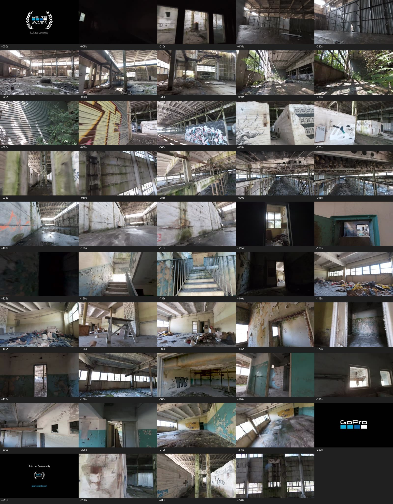

Same-source room survey
CPU-only preview of the accepted GoPro source. Each tile is an approximately 5-second sample; the contact sheet is for zone selection, not a frame-seed approval.
Recommendation: inspect the debris-filled interior around 145–165 seconds as the second-room candidate. Its relationship to the accepted 36.53-second hall remains unknown. No extra Hunyuan run has been authorized.

Survey report and limitations